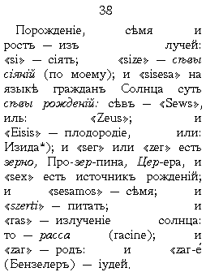
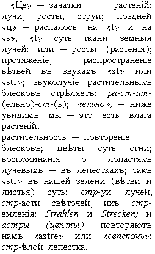

Glossolalia (Section 38)
GLOSSOLALIA

Generation, the germination of the seed and growth come -- from the rays: "si" is -- to shine in Russian [siyat']; "size" is -- the sowings/seedings of things that shine (for me); and "sisesa" in the language of the citizens of the Sun are the sowings/seedings of generations: sowing in Russian [sev] is --"Sews," or "Zeus"; and "Eisis/Isis" is fertility, or Izida*; and "ser" or "zer" is a ripening seed, Pro-ser-pine, Cer-es and "sex" is the source of the generations; and "sesamos" is -- a seed [semen]; and "szerti" is -- to nourish; and "ras" is -- the radiation of the sun's rays: that is -- rassa (racine) and "zar" is - birth: -- and "Zare" (Benzeler) is -- a Judean.

"Ts" are -- the rudimentrary beginnings of plants: rays, growths, streams; later the "ts" split apart: into "t" and into "s"; "t" are earth's threads of rays: or -- growths (plants); the extension, the expansion of branches is in the sounds "st" or "str"; a sound-ray from growing shinings streams out: vegetation in Russian [ra-st-it-(el'no)-st-('); ["el'no"] -- as we shall see below -- is the moisture for growing plants; the growth of vegetation is -- a recapitulation of these shinings; flowers are fires; remembrances of raylike laminae are -- in the petals; so that "str" in our greenery (branches and leaves) are: str-eams of rays, striven passions [strasti] of lights [svetochej], their str-ivings; Strahlen and Strecken; and asters (the flowers [tsvety]) recapitulate. for us "astre" or the "light [svetoch]": with the straight-arrowed stamen of the petal.
* Cf. reference work of Benseler.